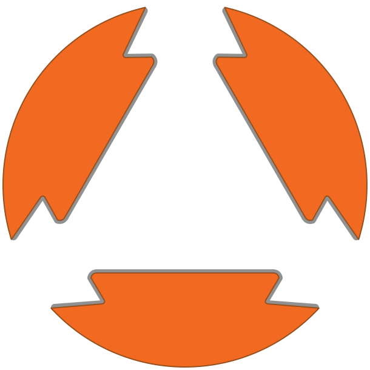

Лишнее время
Чтобы просто посмотреть модель, сотруднику нужно открыть её в отдельном приложении.

OBYOMДля мастерских 3D-печати
OBYOM даёт клиенту ссылку для загрузки STL, показывает модель в браузере и помогает мастерской подтвердить именно ту версию, которая пойдёт дальше в работу.
Проблема
Клиент может прислать не тот STL, а сотруднику придётся открыть файл на десктопе и разбираться с версиями вручную.
Чтобы просто посмотреть модель, сотруднику нужно открыть её в отдельном приложении.
В переписке легко потерять контекст и перепутать последний файл с предыдущим.
Клиент может не понять, что отправил не ту модель, пока мастерская уже не начала работу.
Один понятный процесс
В пилоте мастерская создаёт ссылку вручную. Клиент и сотрудник последовательно смотрят на одну модель.
Название, номер заказа и описание модели. Ссылка действует 7 дней.
Без регистрации и авторизации. Модель сразу появляется в браузере.
Перед подтверждением OBYOM предупреждает: другую модель по этой ссылке загрузить нельзя.
Проверяет внешний вид и версию, подтверждает модель и скачивает файл.
Первый пилот
OBYOM не заменяет ваш production workflow. Он закрывает конкретный момент: приём, просмотр и подтверждение STL перед дальнейшей обработкой.
Клиент и сотрудник смотрят модель без установки дополнительного ПО.
Статус заказа и файл остаются связаны с одной ссылкой.
Личный кабинет показывает только свои заказы, ссылки и историю.
Результат
После проверки сотрудником клиент при повторном открытии ссылки видит статус «Подтверждено сотрудником». Скачивание файла и дальнейшее производство остаются у мастерской.
Обсудить пилот